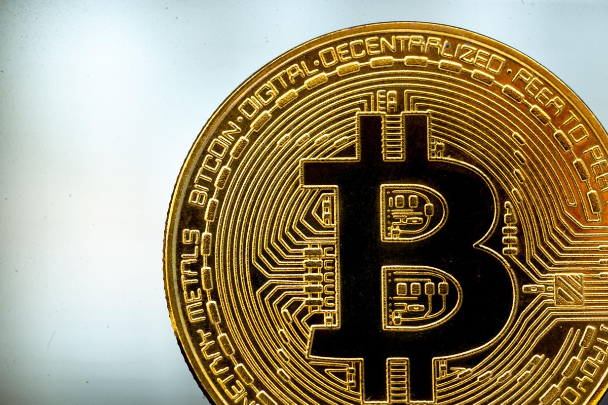
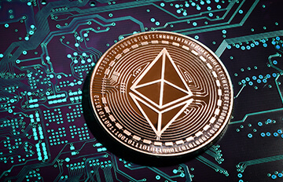
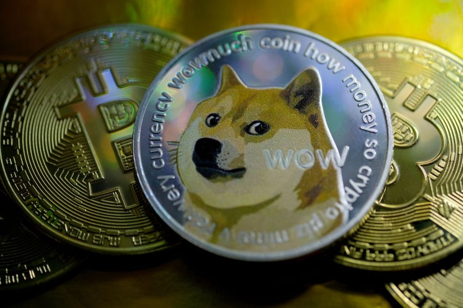

Bitcoin
Bitcoin(₿) is a cryptocurrency invented in 2008 by an unknown person or group of people using the name Satoshi Nakamoto. The currency began use in 2009 when its implementation was released as open-source software. 1 Bitcoin is a decentralized digital currency, without a central bank or single administrator, that can be sent from user to user on the peer-to-peer bitcoin network without the need for intermediaries. Transactions are verified by network nodes through cryptography and recorded in a public distributed ledger called a blockchain.
Bitcoins are created as a reward for a process known as mining. They can be exchanged for other currencies, products, and services, but the real-world value of the coins is extremely volatile.
Read more

Ethereum
Ethereum is a decentralized, open-source blockchain with smart contract functionality. Ether (ETH) is the native cryptocurrency of the platform. It is the second-largest cryptocurrency by market capitalization, after Bitcoin. Ethereum is the most actively used blockchain.
Ethereum was proposed in 2013 by programmer Vitalik Buterin. Development was crowdfunded in 2014, and the network went live on 30 July 2015, with an initial supply of 72 million coins. The platform allows developers to build and operate decentralized applications that users can interact with. Decentralized finance (DeFi) applications provide a broad array of financial services without the need for typical financial intermediaries such as brokerages, exchanges...
Read more

Dogecoin
Dogecoin (/ˈdoʊ(d)ʒkɔɪn/ DOHZH-koyn or DOHJ-koyn, code: DOGE, symbol: Ð) is a cryptocurrency created by software engineers Billy Markus and Jackson Palmer, who decided to create a payment system as a joke, making fun of the wild speculation in cryptocurrencies at the time. Dogecoin features the face of the Shiba Inu dog from the "Doge" meme as its logo and namesake. It was introduced on December 6, 2013, and quickly developed its own online community, reaching a market capitalization of US$85,314,347,523 on May 5, 2021.
Dogecoin.com promotes the currency as the "fun and friendly internet currency", referencing its origins as a joke
Read more